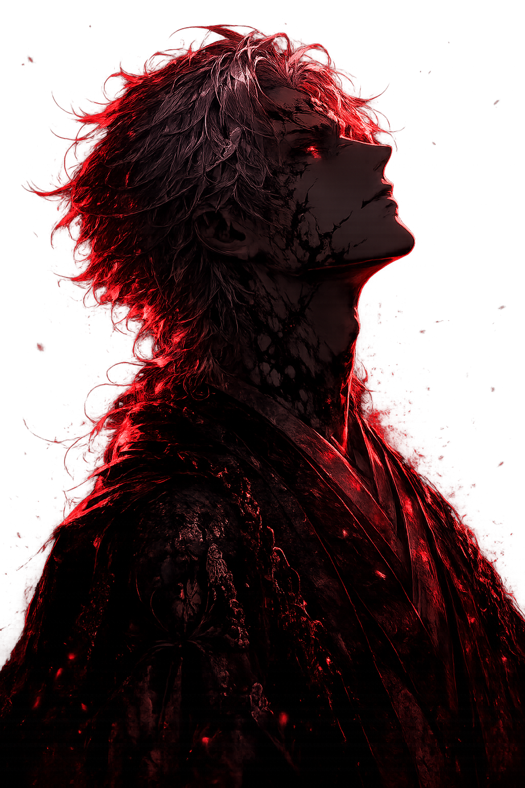
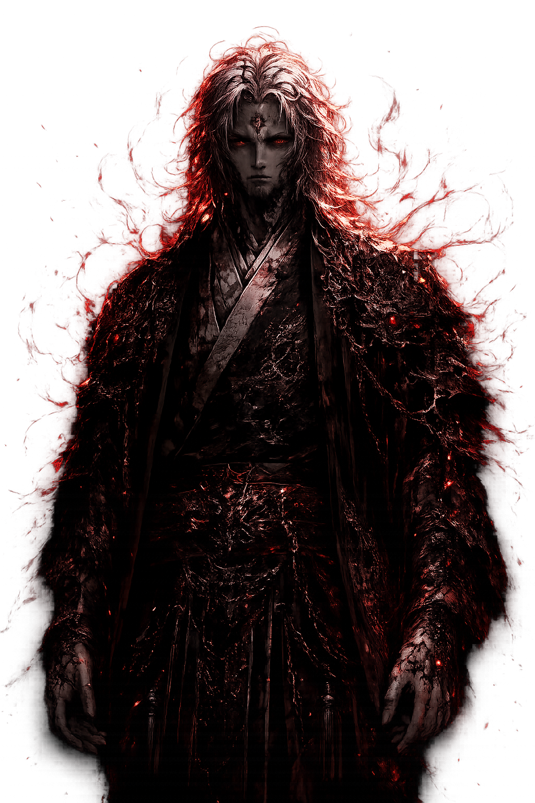

“A floresta não odeia os homens. Apenas os devolve ao que realmente são.”
A Presença Ancestral Que Corrompeu o Sangue dos Homens
Hikogu no Mori não é apenas uma floresta.
É uma entidade antiga. Um lugar vivo. Um fragmento de algo que existia antes mesmo dos impérios, das guerras e da humanidade aprender a temer a escuridão.
Escondida nas profundezas do território Kurotsuki, Hikogu no Mori tornou-se lenda entre camponeses, soldados e sacerdotes. Histórias antigas descrevem a floresta como um reino proibido onde o próprio mundo parece respirar.
Árvores deformadas crescem como corpos retorcidos, névoas carregam vozes impossíveis e criaturas observam silenciosamente qualquer intruso que atravesse seus limites.
Poucos entram. Nenhum homem retorna igual.
Séculos atrás, o imperador Tetsu-zan caminhou até o coração da floresta carregando nos braços seu filho moribundo. Desesperado para salvá-lo, ofereceu algo à entidade que habita Hikogu no Mori.
O menino viveu.
Mas o preço daquele pacto amaldiçoou toda a linhagem Kurotsuki.
Desde então, rumores afirmam que o sangue do clã deixou de ser totalmente humano. Guerreiros adquiriram força monstruosa, olhos passaram a brilhar na escuridão e homens começaram a desaparecer dentro das montanhas do norte.
Ninguém sabe qual é a verdadeira forma de Hikogu no Mori. Alguns acreditam que seja um Oni primordial. Outros dizem que a própria floresta é a criatura.
Há ainda aqueles que afirmam que Hikogu é algo muito pior: uma consciência ancestral capaz de consumir lentamente tudo o que toca.
O mais aterrador não é sua força. É sua influência.
Hikogu não invade reinos. Não marcha para guerras. Não precisa.
Ele sussurra. Corrompe. Espera.
E através do sangue amaldiçoado dos Kurotsuki, sua presença continua se espalhando silenciosamente pelo mundo.
Para muitos, Hikogu no Mori é apenas uma lenda.
Para aqueles que sobreviveram às sombras da floresta, é a própria definição do medo.
“Antes dos homens nascerem, a floresta já observava.”